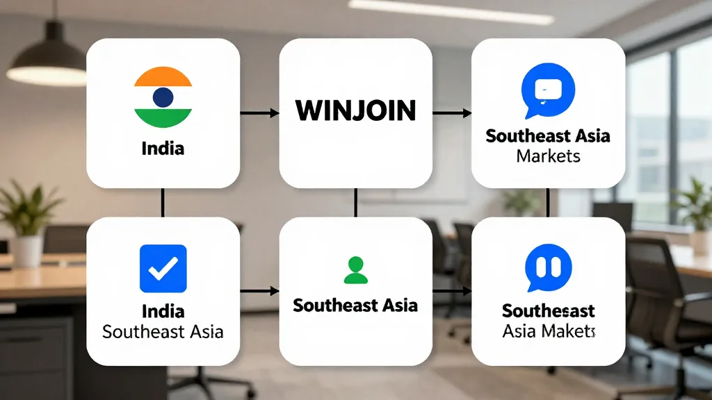

【郑哥点评】
最近睇到「社媒矩阵SaaS系统」——一套后台，统一管理多个账号、多平台内容。对做印度、东南亚B端客户嘅外贸人嚟讲，系撬动市场嘅新杠杆。15个账号传统做法管唔到，SaaS一个后台搞定。
一、点解要关注「社媒矩阵SaaS」？
我哋做印度东南亚B端，最大痛点：
痛点1：账号太多，管唔到。LinkedIn印度代理商、Facebook印尼批发商、Instagram终端零售、YouTube产品视频、Threads最新动态、WhatsApp Business私信，5-6个平台乘3-5个品牌账号等于15-30个账号，一个人管？管唔到。
痛点2：内容分散，效率低。AI生成12张图加2条视频，手动逐个账号上传，每次切换IP或设备都係封号风险。
痛点3：私信乱，询盘流失。LinkedIn有人问OEM、Facebook问代理、Instagram问样品，唔可能同时登5个账号去睇。询盘错过等于钱走咗。
圖片由 AI輔助創作（Z-Image-Turbo）
二、什么是社媒矩阵SaaS？
一句话：一套后台，统一管理多个账号、多平台内容，批量发布、监控互动、数据分析。
SaaS即云端订阅服务，唔使装服务器，按月或按年付费，跨平台访问。但唔系自动群发骚扰（合规！）。核心功能：多账号统一管理、内容批量创作排期、评论私信统一收件箱、数据看板与效果分析、客户线索挖掘同标签分层、团队协作。
三、对印度东南亚B端业务嘅价值
5个品牌（Voy Audio、JABOSI、Rocklight、SONILEX、WINJOIN工厂号）加5个市场就係25个账号，传统做法管唔到，SaaS做法一个后台搞定。
AI工具生成内容（上游）加SaaS工具分发管理（下游），两条链路打通：AI生产 → SaaS存储 → 多平台分发 → 询盘收集 → CRM跟进。
统一收件箱集中处理LinkedIn询价、Facebook私信、Instagram评论、YouTube留言、WhatsApp Business，全部集中一个面板，打标签分配跟进，印度代理商派A同事、样品需求派B同事、价格咨询派C同事。
数据驱动决策：哪款音箱在印度流量最好、哪个时间段发帖询盘最多、哪个品牌账号转化率最高。传统做法手动Excel三日出报告，SaaS做法实时睇数据。

圖片由 AI輔助創作（Z-Image-Turbo）
四、适合你嘅两种使用模式
模式1：品牌矩阵模式——每个品牌独立账号，各自发产品内容、独立数据统计。模式2：市场矩阵模式——同一品牌不同市场本地化，同一品牌印地语、印尼语、越南语、马来语各发。海哥建议：5+品牌选模式1，1-2品牌选模式2。
圖片由 AI輔助創作（Z-Image-Turbo）
五、外贸B端嘅3大风险
风险1：账号风控，大量账号同IP加同质化文案会判定营销垃圾账号触发封号，正确做法系优质差异化素材、每个账号文案微调、控制发布频率。风险2：工具边界，自动私信、加好友、群发呢类操作系封号头号原因，唔可以用。风险3：素材版权，AI生成图片视频要留意版权，避免社媒素材侵权投诉。
六、主流SaaS工具对比
Buffer/Later轻量、发帖排期，适合IG/FB/Threads；Hootsuite老牌、功能最全、海外企业首选；Agorapulse询盘管理强、B端私信首选；Metricool性价比高、关键词监控适合中小企业。
七、落地路径（3步）
Step 1：试用（2-4周），选Buffer/Later，跑1个品牌账号测试发布加私信收件箱。Step 2：扩展（1-2个月），升级到Hootsuite/Agorapulse，加入5个品牌账号加入线索挖掘。Step 3：成熟（3-6个月），团队协作、多语言本地化、数据驱动迭代。
八、海哥嘅实战建议
印度市场重点：优先发布蓝牙音箱OEM价格、印度代理商合作模式、展会信息；适合LinkedIn（B2B询盘）、Facebook（印度批发商群）、YouTube（产品演示）、WhatsApp Business（私信跟进）。
印尼市场重点：印尼语本地化、印尼经销商招募、印尼进口政策；适合Instagram（年轻消费者）、Facebook（印尼主流）、TikTok（短视频）。
内容矩阵设计：产品图每日1-2条发IG/FB、产品视频每周1-2条发YouTube/TikTok、客户案例每周1条发LinkedIn、行业新闻每周2-3条发Threads、询盘跟进每日做WhatsApp。
圖片由 AI輔助創作（Z-Image-Turbo）
九、70后嘅SaaS时代洞察
我哋呢代人做贸易26年，见过太多工具革命：1995互联网、2000阿里平台、2008阿里国际站、2015微信、2020抖音，2026社媒矩阵SaaS系B端矩阵营销。每一次工具革命都重新分配外贸机会，呢个时代我哋70后唔系被淘汰，系要主动拥抱。
外贸B端嘅新玩法：AI内容生产 + 社媒矩阵SaaS分发 + 客户承接 = 印度东南亚市场嘅新机遇。你呢，准备好未？
合作联系 WhatsApp: +852 6641 7912 · 七善門科技 · 星辰算力
本文参考：2026年SaaS工具分析、外贸B端获客实战经验。
[Hany's take]
I came across the "social media matrix SaaS system" recently — one back end that manages multiple accounts and multi-platform content in one place. For anyone selling B2B into India and Southeast Asia, it is a new lever for moving the market. Fifteen accounts is more than a person can handle; the SaaS does it from one dashboard.
1. Why pay attention to "social media matrix SaaS"?
For those of us doing B2B in India and Southeast Asia, the biggest pain points are:
Pain point 1: too many accounts to manage. LinkedIn for Indian agents, Facebook for Indonesian wholesalers, Instagram for end retail, YouTube for product videos, Threads for the latest updates, WhatsApp Business for direct messages — five or six platforms times three to five brand accounts equals 15 to 30 accounts. One person managing that? No chance.
Pain point 2: scattered content, low efficiency. AI generates 12 images and 2 videos, and you upload them one account at a time by hand. Every switch of IP or device is a risk of the account being blocked.
Pain point 3: messy direct messages, lost enquiries. Someone on LinkedIn asks about OEM, someone on Facebook asks about distribution, someone on Instagram asks for samples — you cannot possibly log into five accounts at once to check. A missed enquiry is money walking out the door.
AI-assisted illustration (Z-Image-Turbo)
2. What is social media matrix SaaS?
In one sentence: one back end that manages multiple accounts and multi-platform content, publishes in bulk, monitors engagement, and analyses the data.
SaaS means a cloud subscription service — no server to install, pay monthly or yearly, access it across platforms. But it is not automated spam blasting (stay compliant!). The core features: unified management of many accounts, bulk content creation and scheduling, a single inbox for comments and direct messages, dashboards and performance analysis, lead discovery with tagging and segmentation, and team collaboration.
3. What it is worth for B2B in India and Southeast Asia
Five brands (Voy Audio, JABOSI, Rocklight, SONILEX, and the WINJOIN factory account) across five markets is 25 accounts. The traditional way cannot handle it; with SaaS one dashboard does the job.
AI tools generate the content (upstream) and SaaS tools distribute and manage it (downstream). Join the two links and you get: AI production → SaaS storage → multi-platform distribution → enquiry collection → CRM follow-up.
A unified inbox handles LinkedIn price enquiries, Facebook direct messages, Instagram comments, YouTube comments and WhatsApp Business all in one panel. Tag them and assign the follow-up: Indian agents go to colleague A, sample requests to colleague B, price questions to colleague C.
Data-driven decisions: which speaker gets the best traffic in India, which posting window brings the most enquiries, which brand account converts best. The traditional way means three days of manual Excel before you get a report; with SaaS you watch the numbers in real time.
AI-assisted illustration (Z-Image-Turbo)
4. Two ways to run it
Model 1: brand matrix — each brand runs its own accounts, posts its own product content and keeps its own statistics. Model 2: market matrix — the same brand localised for different markets, posting in Hindi, Indonesian, Vietnamese and Malay. Hany's advice: with five or more brands, use model 1; with one or two brands, use model 2.
AI-assisted illustration (Z-Image-Turbo)
5. The three big risks in B2B export
Risk 1: account control. A large number of accounts on the same IP with near-identical copy gets flagged as a marketing spam account and blocked. The right way is quality differentiated material, small wording tweaks per account, and a controlled posting frequency. Risk 2: tool boundaries. Auto direct-messaging, auto friend requests and mass blasting are the number one cause of bans — do not use them. Risk 3: material copyright. Watch the copyright on AI-generated images and video, and avoid infringement complaints over social media assets.
6. How the mainstream SaaS tools compare
Buffer and Later are lightweight and good for scheduling, suited to IG/FB/Threads; Hootsuite is the old hand with the fullest feature set and the first choice for overseas enterprises; Agorapulse is strong on enquiry management and the first choice for B2B direct messages; Metricool is good value with keyword monitoring, suited to small and medium businesses.
7. How to get there (3 steps)
Step 1: trial (2-4 weeks). Pick Buffer or Later, run one brand account to test posting and the direct-message inbox. Step 2: expand (1-2 months). Upgrade to Hootsuite or Agorapulse, add the five brand accounts, and add lead discovery. Step 3: maturity (3-6 months). Team collaboration, multilingual localisation, data-driven iteration.
8. Hany's practical advice
For India, focus on: Bluetooth speaker OEM prices, cooperation models with Indian agents, and trade show information. Best on LinkedIn (B2B enquiries), Facebook (Indian wholesaler groups), YouTube (product demos) and WhatsApp Business (follow-up).
For Indonesia, focus on: Indonesian-language localisation, recruiting Indonesian dealers, and Indonesian import policy. Best on Instagram (young consumers), Facebook (mainstream in Indonesia) and TikTok (short video).
Content matrix design: one or two product images a day on IG/FB; one or two product videos a week on YouTube/TikTok; one customer case a week on LinkedIn; two or three industry news items a week on Threads; enquiry follow-up on WhatsApp every day.
AI-assisted illustration (Z-Image-Turbo)
9. A 70s veteran's view of the SaaS era
Our generation has done 26 years in trade and lived through plenty of tool revolutions: the internet in 1995, the Alibaba platform in 2000, Alibaba International in 2008, WeChat in 2015, Douyin in 2020, and social media matrix SaaS in 2026 as the B2B matrix marketing play. Every tool revolution redistributes the opportunities in export trade. In this era our generation is not being pushed out — we have to embrace it.
The new way to play B2B export: AI content production + social media matrix SaaS distribution + customer handling = the new opportunity in India and Southeast Asia. So — are you ready?
Business enquiries WhatsApp: +852 6641 7912 · Qishanmen Tech · Star Compute
Sources: 2026 SaaS tool analysis and hands-on B2B lead-generation experience.

關於作者About the Author
鄭哥博客点评：26年外贸老兵，横跨电子、家电、服装、珠宝、教育、AI算力。做过中学教师、翻译、外贸，现搞七善门科技同星辰算力。口头禅：「点解唔得？」Hany Blog Review: 26-year trade veteran across electronics, appliances, fashion, jewelry, education, and AI compute. Now running Qishanmen Tech and Star Compute. Catchphrase: "Why not?"